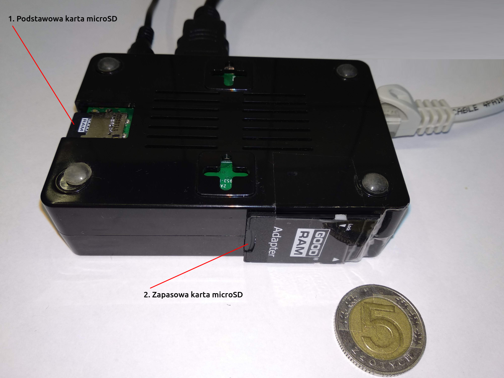

Często zadawane pytania
Jest to pełnowartościowy komputer o małych rozmiarach (9cm x 6cm x 2,5cm).
Jego parametry techniczne są wystarczające do płynnej pracy, a dzięki miniaturyzacji:
• koszt komputera jest niski
• zużywa mało energii (może być zasilany z USB telewizora)
• można go łatwo ukryć, np. za telewizorem
W mikrokomputerze zainstalowane jest niezbędne oprogramowanie do prezentowania kursów walut dla wskazanego konta.
Trzy elementy:
• kabel do internetu (złącze RJ45)
• kabel do obrazu (złącze HDMI)
• kabel do zasilania (złącze micro USB-B)
Wraz z mikrokomputerem dostarczany jest:
• zasilacz do mikrokomputera 230V zakończony końcówką micro USB-B
• kabel USB - micro USB-B do podłączenia alternatywnego, np. do telewizora aby komputer uruchamiał się wraz z telewizorem
• kabel sieciowy (skrętka) do podłączenia z routerem / switchem zakończony złączem RJ45 o długości 10m
• kabel HDMI - długość 1,5m
• karta pamięci wraz systemem operacyjnym i niezbędnym oprogramowaniem
• zapasowa karta pamięci wraz systemem operacyjnym i niezbędnym oprogramowaniem
Dla wersji WKW Online w terminie do 14 dni od otrzymania mikrokomputera, można go odesłać. Jeśli zwrócony mikrokomputer będzie sprawny, wówczas zwrócony zostaje koszt jego zakupu, czyli 300zł netto + 23% VAT.
Rozmiar ekranu telewizora nie ma znaczenia, telewizor powinien posiadać minimum:
• możliwość podłączenia do internetu, np. LAN (RJ45) lub WIFI
• wbudowaną przeglądarkę obsługującą tryb pełnoekranowy oraz javascript
W kolejności:
• podłącz telewizor do sieci Internet (kablem lub WiFi)
• uruchom przeglądarkę
• wprowadź adres demonstracyjnego wyświetlacza kursów walut http://demo.w-k-w.pl
• uruchom tryb pełnoekranowy
• z poziomu komputera lub telefonu zaloguj się do demonstracyjnego panelu http://demo.w-k-w.pl/panel (login: demo, hasło: demo) i zmień wartość jakiegoś kursu
• po zapisaniu na ekranie telewizora powinna pojawić się nowa wartość
Jeśli wszystkie wyżej wymienione czynności udało się wykonać to telewizor nadaje się do wersji WKW Online.
Rozmiar ekranu telewizora nie ma znaczenia, telewizor powinien posiadać port HDMI potrzebny do podłączenia mikrokomputera.
Może to być również monitor do komputera. Istotne jest aby posiadał port HDMI.
Jeśli mikrokomputer planujesz zasilać z telewizora to warto mieć wyjście USB.
• na koniec miesiąca, czyli z dołu
• tylko w przypadku gdy chcesz kontynuować
• odbywa się przelewem na wskazane konto, w tytule powinien znaleźć się login (numer) klienta
• po zaksięgowaniu przelewu FV jest wysyłana na adres e-email
• dla wersji WKW Online Eco telewizor musi być w układzie panoramicznym. Jeśli walut jest dużo i nie mieszczą się 1 kolumnie, wówczas należy skonfigurować je tak aby prezentowały się w 2 lub 3 kolumnach. Przykładowe zdjęcia można znaleźć w galerii
• dla wersji WKW Online telewizor może być w układzie panoramicznym lub portretowym. Z poziomu panelu można wysterować prezentowanie pod kątem 0°, 90°, 180° i 270°
Podłączanie:
1. Kabel sieciowy
2. Kabel HDMI
3. Kabel zasilający
Odłączanie jest odwrotne do podłączania, czyli:
1. Kabel zasilający
2. Kabel HDMI
3. Kabel sieciowy
Należy użyć odpowiedniego kabla (załączonego wraz z mikrokomputerem) z końcówką USB.
Podłączając mikrokomputer do portu USB telewizora sprawiamy, że mikrokomputer będzie się automatycznie włączał przy uruchomieniu telewizora.

Należy użyć zasilacza (załączonego wraz z mikrokomputerem).
Podłączenie w taki sposób zapewnia stałe podłączenie niezależnie od tego czy telewizor jest włączony czy nie
Nie podpisuje się żadnej umowy.
W każdej chwili można przerwać użytkowanie bez żadnych konsekwencji i opłat.
Zasadniczo w przypadku wersji WKW Online do której załączony jest mikrokomputer awarii mogą ulec dwa elementy fizyczne:
• mikrokomputer
• karta microSD (w mikrokomputerze), na której znajduje się oprogramowanie
Awaria powyższych elementów nie powoduje straty zapisanej konfiguracji ani kursów. Wszystkie dane trzymane są wraz z kopiami zapasowymi na serwerach.
Co robić w przypadku awarii mikrokomputera?
Żaden z mikrokomputerów od czasu pierwszego klienta, czyli z początku 2016 roku nie uległ do tej pory awarii.
W przypadku zdiagnozowania takiej awarii należy wymienić mikrokomputer.
Co zrobić w przypadku awarii karty microSD?
W takim przypadku należy odłączyć zasilanie i wymienić kartę podstawową na zapasową, następnie poinformować nas o zaistniałej sytuacji celem nabycia nowej zapasowej karty.

Aby zautomatyzować synchronizację wyświetlanych kursów z kursami w programie kasowym można posłużyć się oprogramowaniem WKW integrator
Oprogramowanie to dokonuje integracji za pośrednictwem pliku.
Jeśli interesuje Cię integracja z konkretnym programem kasowym to zapraszam do kontaktu.
Potrafimy zintegrować się z każdym programem kasowym przy założeniu, że potrafi "dzielić" w jakiś sposób informacjami o kursach.
Wyświetlacz Kursów Walut.